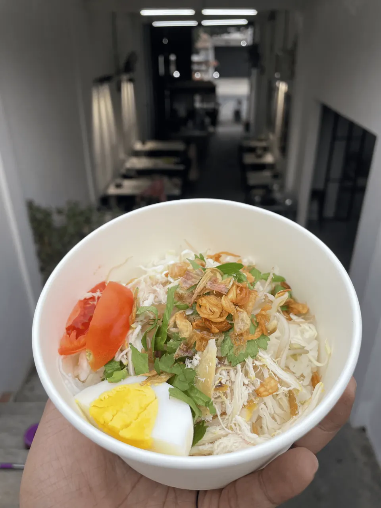

Soto Ayam Mbah Poetri
Soto ayam dengan pelengkap dalam semangkuk rasa rumahan.
SOTO AYAM KHAS MBAH POETRI
Ada rasa yang selalu ingin kita temui lagi.
Sederhana, akrab, dan penuh kehangatan.
Dinikmati perlahan. Dikenang lama.

TENTANG KAMI
Semangkuk soto punya caranya sendiri untuk membuat kita merasa di rumah. Soto Mbah Poetri mengajak Anda meluangkan waktu, duduk bersama, dan menikmati hangatnya hidangan yang akrab di hati.
KUNJUNGI KAMI
Mampir untuk semangkuk soto
dan waktu yang menyenangkan.
Informasi lokasi segera tersedia.
Informasi jam buka segera tersedia.